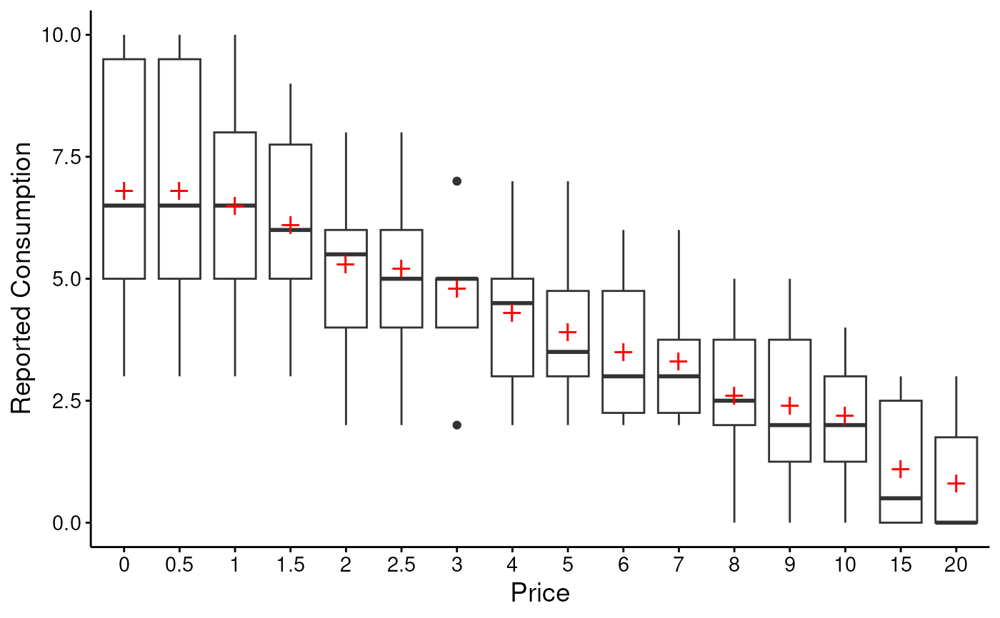
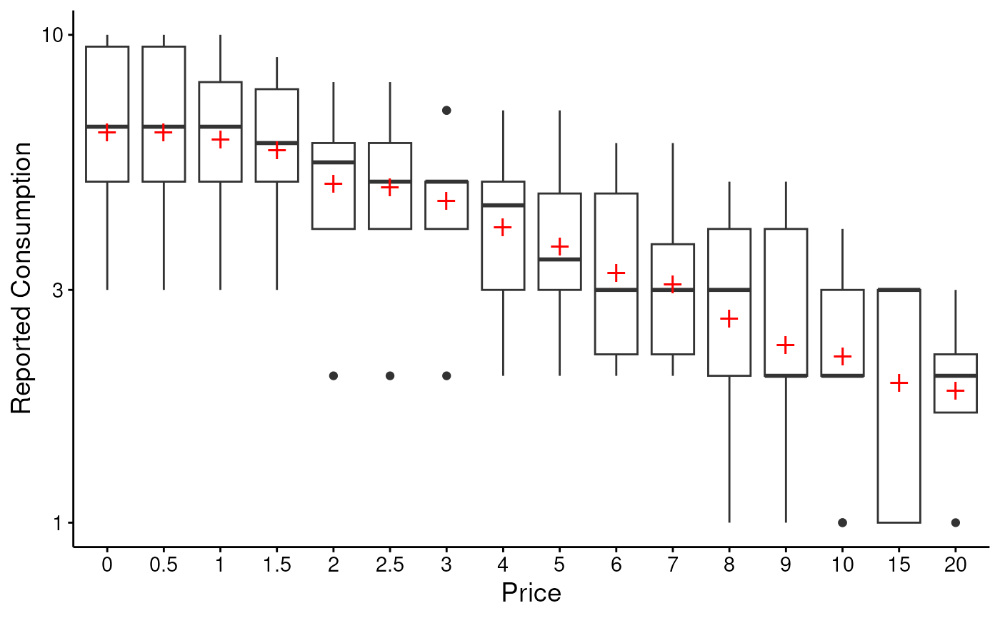
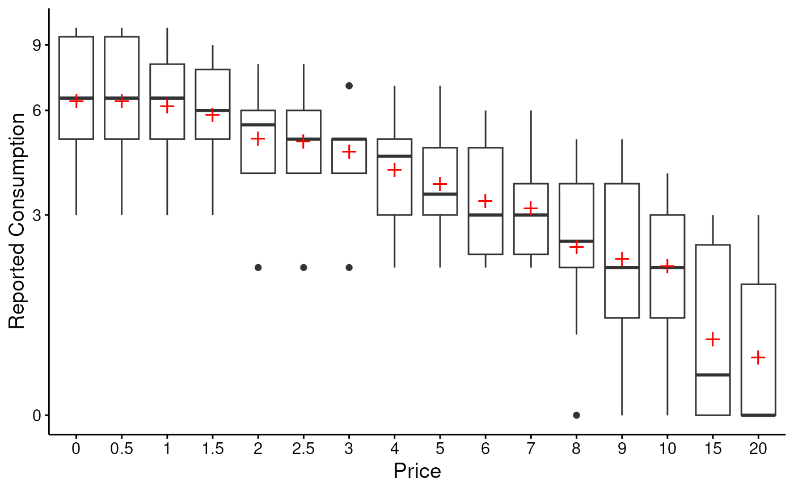

S3 Methods for beezdemand_descriptive Objects
Source:R/descriptive-methods.R
beezdemand_descriptive_methods.RdMethods for printing, summarizing, and visualizing objects of class
beezdemand_descriptive created by get_descriptive_summary().
Arguments
- x, object
A
beezdemand_descriptiveobject- ...
Additional arguments (currently unused)
- x_trans
Character string specifying x-axis transformation. Options: "identity" (default), "log10", "log", "sqrt". See
scales::transform_log10()etc.- y_trans
Character string specifying y-axis transformation. Options: "identity" (default), "log10", "log", "sqrt", "pseudo_log" (signed log).
- show_zeros
Logical indicating whether to show proportion of zeros as labels on the boxplot (default: FALSE)
Details
Print Method
Displays a compact summary showing the number of subjects and prices analyzed, plus a preview of the statistics table.
Summary Method
Provides extended information including:
Data summary (subjects, prices analyzed)
Distribution of means across prices (min, median, max)
Proportion of zeros by price (range)
Missing data summary
Plot Method
Creates a boxplot showing the distribution of consumption at each price point. Features:
Red cross markers indicate means
Boxes show median and quartiles
Whiskers extend to 1.5 * IQR
Supports axis transformations (log, sqrt, etc.)
Uses modern beezdemand styling via
theme_apa()
Examples
# \donttest{
data(apt, package = "beezdemand")
desc <- get_descriptive_summary(apt)
# Print compact summary
print(desc)
#> Descriptive Summary of Demand Data
#> ===================================
#>
#> Call:
#> get_descriptive_summary(data = apt)
#>
#> Data Summary:
#> Subjects: 10
#> Prices analyzed: 16
#>
#> Statistics by Price:
#> Price Mean Median SD PropZeros NAs Min Max
#> 0 6.8 6.5 2.62 0.0 0 3 10
#> 0.5 6.8 6.5 2.62 0.0 0 3 10
#> 1 6.5 6.5 2.27 0.0 0 3 10
#> 1.5 6.1 6.0 1.91 0.0 0 3 9
#> 2 5.3 5.5 1.89 0.0 0 2 8
#> 2.5 5.2 5.0 1.87 0.0 0 2 8
#> 3 4.8 5.0 1.48 0.0 0 2 7
#> 4 4.3 4.5 1.57 0.0 0 2 7
#> 5 3.9 3.5 1.45 0.0 0 2 7
#> 6 3.5 3.0 1.43 0.0 0 2 6
#> 7 3.3 3.0 1.34 0.0 0 2 6
#> 8 2.6 2.5 1.51 0.1 0 0 5
#> 9 2.4 2.0 1.58 0.1 0 0 5
#> 10 2.2 2.0 1.32 0.1 0 0 4
#> 15 1.1 0.5 1.37 0.5 0 0 3
#> 20 0.8 0.0 1.14 0.6 0 0 3
# Extended summary
summary(desc)
#> Extended Summary of Descriptive Statistics
#> ==========================================
#>
#> Data Overview:
#> Number of subjects: 10
#> Number of prices: 16
#> Price range: 0 to 9
#>
#> Distribution of Mean Consumption Across Prices:
#> Minimum: 0.80
#> Median: 4.10
#> Maximum: 6.80
#>
#> Proportion of Zeros by Price:
#> Range: 0.00 to 0.60
#>
#> Missing Data:
#> No missing values detected
# Default boxplot
plot(desc)

# With log-transformed y-axis
plot(desc, y_trans = "log10")
#> Warning: log-10 transformation introduced infinite values.
#> Warning: log-10 transformation introduced infinite values.
#> Warning: Removed 14 rows containing non-finite outside the scale range
#> (`stat_boxplot()`).
#> Warning: Removed 14 rows containing non-finite outside the scale range
#> (`stat_summary()`).

# With pseudo-log y-axis (handles zeros gracefully)
plot(desc, y_trans = "pseudo_log")

# }